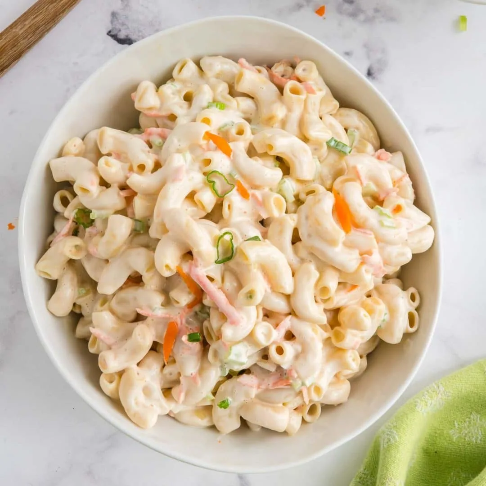

Want to have extra flavorful and juicy shrimp? Brine them for exactly 30 minutes first, in a brine of 1 quart water, 1/4 cup sugar, 1/4 cup kosher salt (or 3 Tbsp table salt), and 1 cup ice. Dissolve the sugar and salt into the water first, before adding the shrimp and ice.
Ingredients1. Heat a large frying pan or sauté pan on medium heat. Add the coconut flakes and stir constantly, until the flakes are slightly browned at the edges.
2.Immediately spoon onto a plate to stop the cooking and prevent burning.Set aside to cool. Sauté the shrimp: 3. Season the shrimp with salt and pepper. Return the same frying pan to the stove and heat on medium high heat. Pour in 1 tablespoon of cooking oil and swirl to coat. 4. When the oil is hot, add the shrimp and cook for 2 minutes each side or until just barely cooked through. Spoon out the shrimp to a serving platter. Sauté the fruit: 5.Use the same frying pan, heat to medium-high heat, pour just 2 teaspoons of cooking oil and swirl to coat. 6.When the oil is shimmering, add the diced onion and sauté for 1 minute. Add the mango, pineapple, and the kiwi and cook for 1 minute until bubbly and softened. 7.Add the fresh mint, sugar, chili powder and just a pinch of salt. 8. Finish with a light squeeze of lime, sprinkled on top of the shrimp. FinisherSprinkle with toasted coconut flakes: Sprinkle the shrimp and salsa with toasted coconut flakes. Sautéed Shrimp with Tropical Salsa QUICK DINNERS
EASY DINNERS
LENT
GLUTEN-FREE
SKILLET
NUTRITION FACTS
(PER SERVING)
328
CALORIES
9g
FAT
50g
CARBS
18g
PROTEIN
Show Full Nutrition Label
Nutrition information is calculated using an ingredient database and
should be considered an estimate. In cases where multiple ingredient
alternatives are given, the first listed is calculated for nutrition.
Garnishes and optional ingredients are not included.
QUICK DINNERS
EASY DINNERS
LENT
GLUTEN-FREE
SKILLET
NUTRITION FACTS
(PER SERVING)
328
CALORIES
9g
FAT
50g
CARBS
18g
PROTEIN
Show Full Nutrition Label
Nutrition information is calculated using an ingredient database and
should be considered an estimate. In cases where multiple ingredient
alternatives are given, the first listed is calculated for nutrition.
Garnishes and optional ingredients are not included.
1. Cook the macaroni according to the box instructions paying special care to not overcook it. You want it to be al dente. Once drained, immediatly add the apple cider vinegar and onions to the warm pasta and stir to mix well. The warm pasta will absorb the vinegar better. 2.Let cool for at least 15 minutes, before adding the dressing mixture so it doesnt seperate. 3.In a separate bowl mix the mayo, milk and brown sugar; mix well. Once the pasta has cooled toss the macaroni with the dressing. If you are making a day ahead, save 1/4 cup of the mayo dressing to be able to add in case it dries out. 4. Allow to cool in fridge for at least 2 hours. FinisherWhen ready to serve add the carrots and mix. SPrinkle the top with green onions. Store in a sealed container in the fridge. Keeps for up to a week, but it does dry out a little. You can add additional milk to thin it a little if necessary. Notes 30 minute time in prep includes 15 minutes of rest before adding dressing to the salad as well as the chopping vegetables time. The chill time is merely sitting in fridge chilling time.
 Nutrition Information: YIELD: 16 SERVING SIZE: Amount Per Serving: CALORIES: 247TOTAL FAT: 21gSATURATED FAT: 3gTRANS FAT: 0gUNSATURATED FAT: 17gCHOLESTEROL: 13mgSODIUM: 260mg CARBOHYDRATES: 11gFIBER: 1gSUGAR: 1g PROTEIN: 3g This recipe was calculated using the exact brands and measurements I used to make this recipe. If you are following a strict diet please note changing anything will cause the nutritional info to change. Please calculate your own nutritional information if you want it exact to what you make and use my calculations as a guide only.